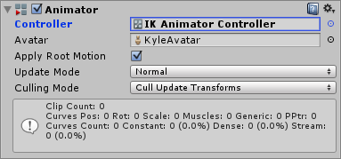

Most animation is produced by rotating the angles of jointsA physics component allowing a dynamic connection between rigidbodies, usually allowing some degree of movement such as a hinge. More info
See in Glossary in a skeleton to predetermined values. The position of a child joint changes according to the rotation of its parent and so the end point of a chain of joints can be determined from the angles and relative positions of the individual joints it contains. This method of posing a skeleton is known as forward kinematicsThe geometry that describes the position and orientation of a character’s joints and bodies. Used by inverse kinematics to control character movement.
See in Glossary.
However, it is often useful to look at the task of posing joints from the opposite point of view - given a chosen position in space, work backwards and find a valid way of orienting the joints so that the end point lands at that position. This can be useful when you want a character to touch an object at a point selected by the user or plant its feet convincingly on an uneven surface. This approach is known as Inverse Kinematics (IK) and is supported in Mecanim for any humanoid character with a correctly configured Avatar.
To set up IK for a character, you typically have objects around the sceneA Scene contains the environments and menus of your game. Think of each unique Scene file as a unique level. In each Scene, you place your environments, obstacles, and decorations, essentially designing and building your game in pieces. More info
See in Glossary that a character interacts with, and then set up the IK through script, in particular, Animator functions like
SetIKPositionWeight,
SetIKRotationWeight,
SetIKPosition,
SetIKRotation,
SetLookAtPosition,
bodyPosition,
bodyRotation
In the illustration above, we show a character grabbing a cylindrical object. How do we make this happen?
We start out with a character that has a valid AvatarAn interface for retargeting animation from one rig to another. More info
See in Glossary.
Next create an Animator ControllerControls animation through Animation Layers with Animation State Machines and Animation Blend Trees, controlled by Animation Parameters. The same Animator Controller can be referenced by multiple models with Animator components. More info
See in Glossary with containing at least one animation for the character. Then in the Layers pane of the Animator windowThe window where the Animator Controller is visualized and edited. More info
See in Glossary, click the cog settings icon of the Layer and and check the IK Pass checkbox in the menu which pops up.
Make sure the Animator Controller is assigned to the character’s Animator ComponentA functional part of a GameObject. A GameObject can contain any number of components. Unity has many built-in components, and you can create your own by writing scripts that inherit from MonoBehaviour. More info
See in Glossary:

Next, attach to it a script that actually takes care of the IK, let’s call it IKControl. This script sets the IK target for the character’s right hand, and its look position to make it look at the object it is holding:
using UnityEngine;
using System;
using System.Collections;
[RequireComponent(typeof(Animator))]
public class IKControl : MonoBehaviour {
protected Animator animator;
public bool ikActive = false;
public Transform rightHandObj = null;
public Transform lookObj = null;
void Start ()
{
animator = GetComponent<Animator>();
}
//a callback for calculating IK
void OnAnimatorIK()
{
if(animator) {
//if the IK is active, set the position and rotation directly to the goal.
if(ikActive) {
// Set the look target position, if one has been assigned
if(lookObj != null) {
animator.SetLookAtWeight(1);
animator.SetLookAtPosition(lookObj.position);
}
// Set the right hand target position and rotation, if one has been assigned
if(rightHandObj != null) {
animator.SetIKPositionWeight(AvatarIKGoal.RightHand,1);
animator.SetIKRotationWeight(AvatarIKGoal.RightHand,1);
animator.SetIKPosition(AvatarIKGoal.RightHand,rightHandObj.position);
animator.SetIKRotation(AvatarIKGoal.RightHand,rightHandObj.rotation);
}
}
//if the IK is not active, set the position and rotation of the hand and head back to the original position
else {
animator.SetIKPositionWeight(AvatarIKGoal.RightHand,0);
animator.SetIKRotationWeight(AvatarIKGoal.RightHand,0);
animator.SetLookAtWeight(0);
}
}
}
}
As we do not intend for the character’s hand to reach inside the object to its centre (the cylinder’s pivot point), we position an empty child object (in this case, named “Cylinder Grab Handle”) where the hand should be on the cylinder, and rotate it accordingly. The hand then targets this child object.
This “grab handle” Game Object should then be assigned as the “Right Hand Obj” property of the IKControl script
In this example, we have the look target set to the cylinder itself, so the character looks directly towards the centre of the object even though the handle is near the bottom.
Enter play mode, and you should see the IK come to life. Observe the character grabbing and ungrabbing the object as you click the IKActive checkbox, and try moving the cylinder around in playmode to see the arm and hand follow the object.
Did you find this page useful? Please give it a rating: